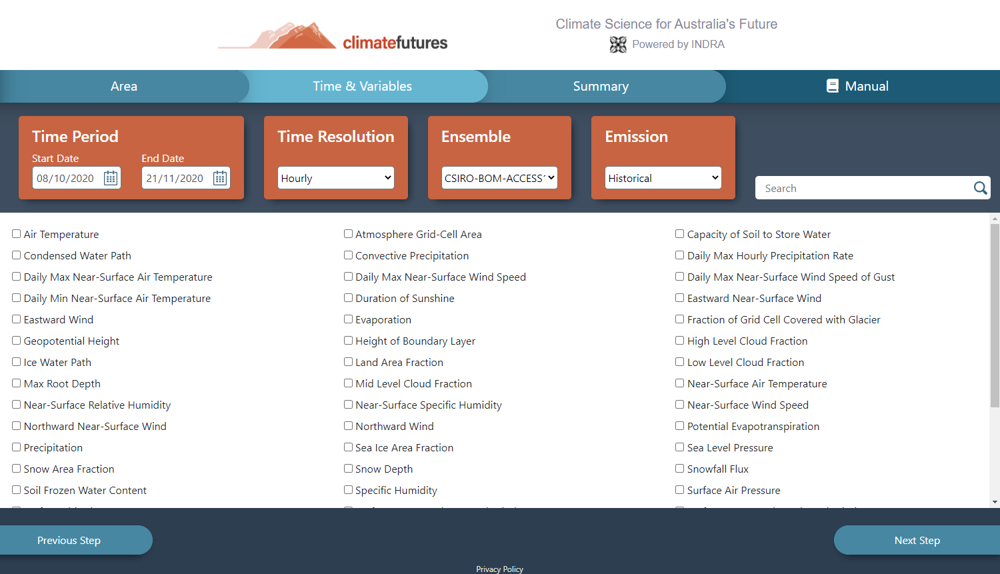
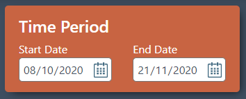
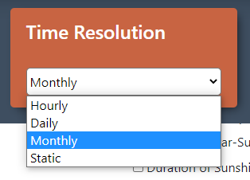
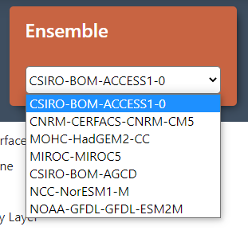
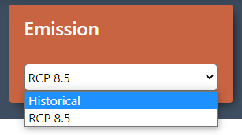
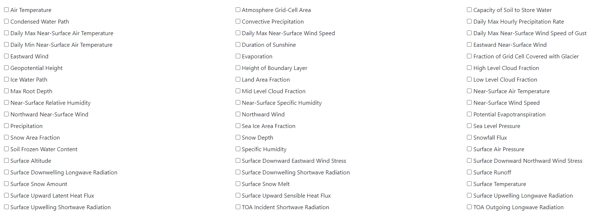
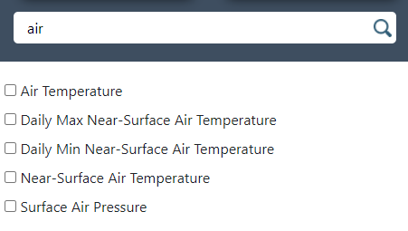

Step 2 of the application focuses on setting more important filters for data extraction, most importantly Time Period and Variables, these filters are usually the most important to most users looking to search data, but other options are also included to help specify your search even more.
Different filters are presented in separate orange boxes, and the long list of variables is displayed in the centre of the screen.
With this filter you must specify a period of time to search for climate data within.
To input dates you may click on the numbers and input them with your keyboard, or click the small calendar icon to open an interactive calendar and select a date that way.
When an end date is selected the start date will automatically be set to it too in case you set a far back date then you will not need to scroll back once again.
You must specify a time period in order to search for data and the start and end dates must be in the correct order (start date comes before end date).
Time resolution determines the frequency of recorded climate data, this is how common climate data was recorded, ranging from hourly to monthly.
The desired time resolution can be selected from the drop-down list.
The Time Resolution option consists of 3 options: Daily, Hourly and Monthly.
Static can be used for data that does not change, of which there is some of in the database, such as Surface Altitude.
For example, a climate data file over a time period of 2 30-day months, with a time resolution of 1 hour will contain 2 * 30 * 24 = 1440 data records.
Note: when performing the final search for data you will be presented with data of all time resolutions, but will be shown results from your choice in this step automatically, but other results can still be accessed.
Ensembles are complex climate data models that climate data is based around, of which there are 7 choices.
These ensemble members include the following:
These options may be simply selected by clicking the drop down list and clicking the desired option.
Emission options allow for selection of two options:
These options may be simply selected by clicking the drop-down list and clicking the desired option.
There are 59 variables to choose from for searching the climate data.
The variable list is displayed in the main section of the interface and each variable represents a kind of climate data.
It can be selected by clicking the checkbox or the name next to the checkbox with the left mouse button.
More than one variable can be selected (search time will increase with the number of variables selected)
At least one variable must be selected to begin the search.
As there are many variables and you likely only want a handful or less, you may quickly search the list of variables for the ones you desire.
Left click on the variable search box to focus it and begin typing the name of the variable you want to find. The variable list will display all variables that match part of the text you had typed.
